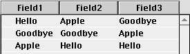

News
| Cross-Platform Compiling |
| MacAddict = RB Addict? |
| Navigation Services in RB |
| Anti-Aliased Text for RB |
| RB Patches |
| Mozilla, here we come! |
| ActionSurface, now we can see thee! |
| OS 8 List boxes are here. |

| The Bar-B-Q has moved. |
| Version Jumps |
| Ver | Date | Summary |
| F6 | 8/17 | Bug fixes Delete button in CFM editor. |
| F7 | 8/19 | Improved AppleEvent handling Smoother control redrawing. |
| F8 | 8/27 | Mostly bug fixes The URL in the about box is now clickable. |
| F9 | 9/4 | Bug fixes galore Editfields now allowed in global floaters. |
| DR2r5 | 8/10 | Bug fixes First run of a windows compiler (see news) |
| DR2r6 | 8/20 | Not known |
| DR2r7 | 8/29 | DatabaseCursor Class Database example |
| DR2r8 | 9/3 | Database Object HasHeading and SortClicked event for Listboxes |
| DR2r9 | 9/9 | Tons of improvements for the Win32 compiler. |